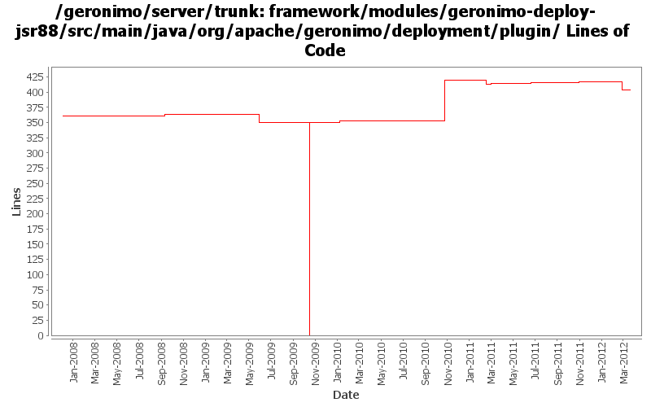

[root]/framework/modules/geronimo-deploy-jsr88/src/main/java/org/apache/geronimo/deployment/plugin
 eba
(1 files, 39 lines)
eba
(1 files, 39 lines)
 factories
(2 files, 316 lines)
factories
(2 files, 316 lines)
 jmx
(4 files, 1085 lines)
jmx
(4 files, 1085 lines)
 local
(7 files, 1145 lines)
local
(7 files, 1145 lines)
 remote
(5 files, 457 lines)
remote
(5 files, 457 lines)

| Author | Changes | Lines of Code | Lines per Change |
|---|---|---|---|
| Totals | 21 (100.0%) | 468 (100.0%) | 22.2 |
| djencks | 8 (38.1%) | 352 (75.2%) | 44.0 |
| genspring | 3 (14.3%) | 75 (16.0%) | 25.0 |
| johnxiao | 2 (9.5%) | 24 (5.1%) | 12.0 |
| gawor | 2 (9.5%) | 7 (1.5%) | 3.5 |
| xuhaihong | 2 (9.5%) | 6 (1.3%) | 3.0 |
| rwonly | 2 (9.5%) | 4 (0.9%) | 2.0 |
| jdillon | 2 (9.5%) | 0 (0.0%) | 0.0 |
fix ConfigIDExtractor jarFile handling as it is completely broken
5 lines of code changed in 1 file:
GERONIMO-6288 When deploy a EBA with long symbolicname, showing an error Msg "xxxx already existes in the server"
12 lines of code changed in 1 file:
GERONIMO-6260 Could not redeploy EJB module
12 lines of code changed in 1 file:
GERONIMO-6209: Class hot swap for OSGi applications
2 lines of code changed in 1 file:
GERONIMO-5764 Support Bundles Deployment
2 lines of code changed in 1 file:
GERONIMO-5838 Support EBA module type in DeploymentManager.getAvailableModules(ModuleType, Target[])
2 lines of code changed in 1 file:
Replace hard code EBA group id "application" with a CONSTANT.
1 lines of code changed in 1 file:
GERONIMO-5769 use OSGi API to operate WAB in portlet, suggestion from Jarek.
3 lines of code changed in 1 file:
GERONIMO-5284 Redeploy of EBA fails
71 lines of code changed in 1 file:
Use jline from karaf-shell in gerronimo-deploy-tool, also some codes clean up
2 lines of code changed in 1 file:
GERONIMO-5008 Create util methods for all the Geronimo components
4 lines of code changed in 1 file:
GERONIMO-4916 step 2 move sandbox osgi framework into trunk
350 lines of code changed in 2 files:
GERONIMO-4916 step 1 remove old framwork
0 lines of code changed in 2 files:
GERONIMO-3402 Apply patch from Lasantha Ranaweera, Replace deprecated DeployUtils with FileUtils
0 lines of code changed in 1 file:
GERONIMO-4284 fix the jpa stuff, recover better from multicast problems, add a gshell command, restructure slightly how non-jsr88 stuff is obtained in gshell
2 lines of code changed in 1 file:
(GERONIMO-3985) Use SLF4J as the primary logging facade for Geronimo
0 lines of code changed in 2 files:
GERONIMO-3607 Add 'assemble a server' support to geronimo and use it from car-maven-plugin and gshell. Not yet available in the console. Better repository support would be desirable
0 lines of code changed in 2 files: